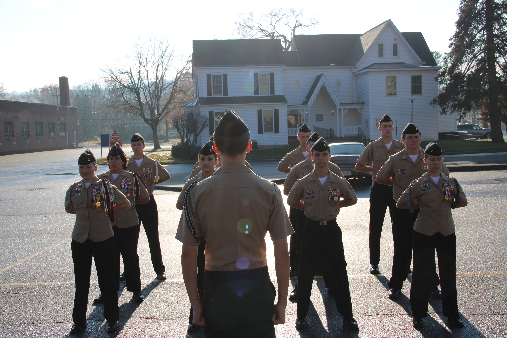

Learning focus
Cadets practice facing, marching, formations, and command response while concentrating on posture and shared timing.
- Posture
- Synchronized steps
- Clear commands
Movements and equipment use require governing-guidance review and Naval Science Instructor approval before publication or practice.